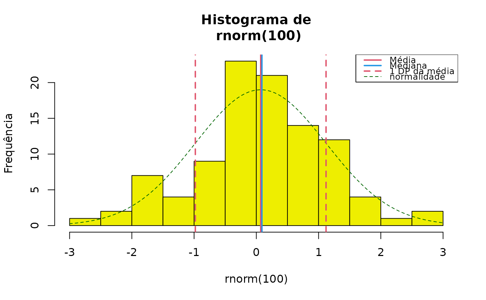
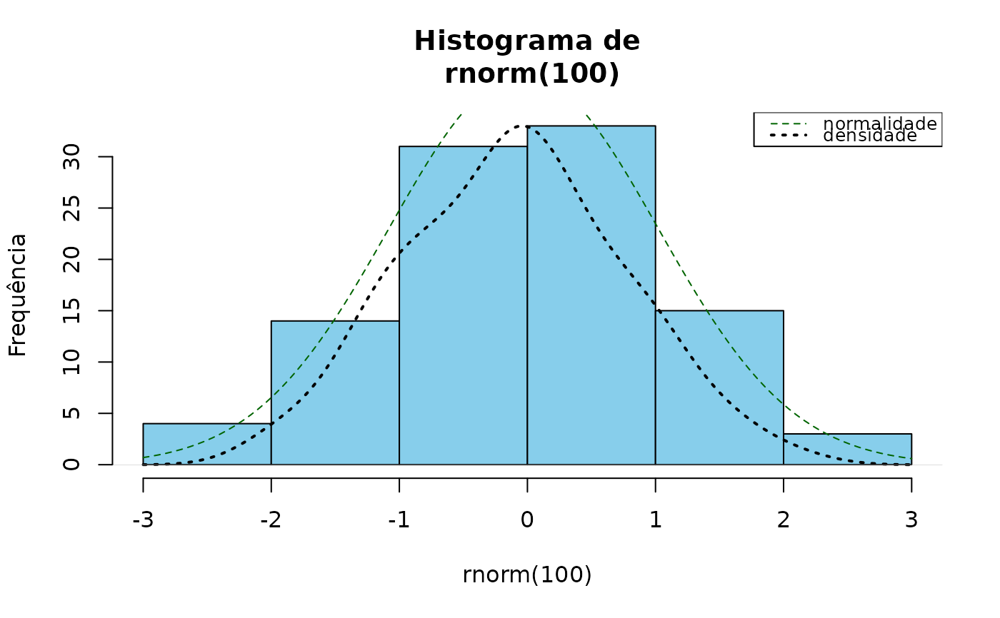

Descreve uma variável numérica
descreve.RdExecuta a descrição "completa" de uma variável numérica, contínua ou discreta, e desenha um histograma, possivelmente com linhas para a média, mediana e distância da média até 1 ou 2 desvios-padrão, além da curva de probabilidade Normal para os parâmetros apresentados.
Usage
descreve(
x,
by = NULL,
dec = 2,
na.rm = TRUE,
data = NULL,
histograma = TRUE,
breaks = "Sturges",
freq = TRUE,
main = NULL,
xlab = NULL,
ylab = NULL,
linhas = 2,
curva = TRUE,
densidade = FALSE,
col.dens = 1,
col = "yellow2",
col.curva = "DarkGreen",
col.media = 2,
col.dp = col.media,
col.mediana = 4,
legenda = TRUE,
lugar = "topright",
lty.curva = 2,
lwd.curva = 1,
lty.dens = 3,
lwd.dens = 2,
lty = NULL,
lwd = NULL,
cex = NULL,
print = "output",
soma = FALSE,
...
)Argumentos
- x
Um vetor numérico
- by
tentar incluir esse argumento
- dec
Número de dígitos
- na.rm
TRUE (default) remove os missings
- data
Argumento opcional. Banco de dados contendo
x. O padrão é NULL.- histograma
TRUE (default) desenha um histograma
- breaks
Número de divisões, de acordo com
hist; o método padrão é Sturges'- freq
TRUE (default) define o eixo y como frequência; FAlSE o define como densidade
- main
Título do gráfico
- xlab
Rótulo do eixo x
- ylab
Rótulo do eixo y
- linhas
TRUE (default) desenha linhas verticais com a média, mediana e média + 1 ou 2 DP
- curva
TRUE (default) desenha a curva normal esperada
- densidade
O padrão é FALSE; passe para TRUE para desenhar a curva de densidade da distribuição
- col.dens
Cor da curva de densidade; o padrão é 'black'
- col
Cor das barras do histograma; o padrão é 'yellow2'
- col.curva
Cor da curva normal; o padrão é 'DarkGreen'
- col.media
Cor da linha da média; o padrão é 'red'
- col.dp
Cor das linhas do SP; por padrão é a mesma que col.media ('red')
- col.mediana
Cor da linha da mediana; o padrão é 'blue'
- legenda
TRUE (default) desenha a legenda
- lugar
Posição da legenda; padrão é 'topright'
- lty.curva
Tipo da linha da curva normal; padrão é 2
- lwd.curva
Largura da linha da curva normal; padrão é 1
- lty.dens
Tipo da linha da curva de densidade; padrão é 3
- lwd.dens
Largura da linha da curva de densidade; padrão é 2
- lty
Tipo da linha para o histograma; padrão é NULL
- lwd
Largura da linha para o histograma; padrão é NULL
- cex
Tamanho da fonte
Modo de apresentação;
print = "tabela"retorna uma tabela com as estatísticas- soma
TRUE apresenta a soma dos valores; padrão é FALSE
- ...
Toma parâmetros de outras funções utilizadas
Exemplos
descreve(rnorm(100))

#>
#> rnorm(100) : 100 observações
#>
#> Válidos: 100 Missings: 0
#> Menor: -2.61 Maior: 2.76 Amplitude: 5.37
#> Média: 0.07 DP: 1.05 CV(%): 1484.56
#> Assimetria: -0.21 Curtose(real): 3.24
#> Quantis:
#> 2.5% 5% 25% 50% 75% 95% 97.5%
#> -2.10 -1.87 -0.36 0.09 0.62 1.68 2.00
#> IIQ: 0.98
descreve(rnorm(100), breaks = 'Scott')
#>
#> rnorm(100) : 100 observações
#>
#> Válidos: 100 Missings: 0
#> Menor: -1.9 Maior: 2.56 Amplitude: 4.46
#> Média: 0.11 DP: 1.01 CV(%): 883.08
#> Assimetria: 0.1 Curtose(real): 2.35
#> Quantis:
#> 2.5% 5% 25% 50% 75% 95% 97.5%
#> -1.72 -1.52 -0.61 0.13 0.86 1.88 2.09
#> IIQ: 1.47
descreve(rnorm(100), breaks = 'Scott', linhas = FALSE, densidade = TRUE, col = 'skyblue')

#>
#> rnorm(100) : 100 observações
#>
#> Válidos: 100 Missings: 0
#> Menor: -2.45 Maior: 2.65 Amplitude: 5.1
#> Média: -0.03 DP: 1.05 CV(%): 3498.15
#> Assimetria: 0.06 Curtose(real): 2.6
#> Quantis:
#> 2.5% 5% 25% 50% 75% 95% 97.5%
#> -2.08 -1.57 -0.83 0.01 0.68 1.62 2.01
#> IIQ: 1.52
descreve(rnorm(100), print = "tabela")
 #> rnorm(100)
#> n 100.00
#> Válidos 100.00
#> Missings 0.00
#> Menor -1.98
#> Maior 2.13
#> Amplitude 4.11
#> Média 0.19
#> Variância 0.98
#> DP 0.99
#> CV(%) 526.04
#> Assimetria 0.05
#> Curtose 2.27
#> P2.5 -1.65
#> P5 -1.40
#> P25 -0.42
#> P50 0.06
#> P75 1.00
#> P95 1.84
#> P97.5 2.01
#> IIQ 1.42
obitosRS2019$sexo <- factor(obitosRS2019$sexo)
descreve(obitosRS2019$idade)
#>
#> obitosRS2019$idade : 10000 observações
#>
#> Válidos: 9993 Missings: 7 (0.07%)
#> Menor: 0 Maior: 112 Amplitude: 112
#> Média: 68.78 DP: 19.66 CV(%): 28.59
#> Assimetria: -1.27 Curtose(real): 4.91
#> Quantis:
#> 2.5% 5% 25% 50% 75% 95% 97.5%
#> 17 29 60 72 83 92 95
#> IIQ: 23
if (FALSE) { # \dontrun{
# NÃO FUNCIONA!
descreve(idade, obitosRS2019$sexo, data = obitosRS2019)
# Esse funciona
with(obitosRS2019, descreve(idade, sexo))
} # }
#> rnorm(100)
#> n 100.00
#> Válidos 100.00
#> Missings 0.00
#> Menor -1.98
#> Maior 2.13
#> Amplitude 4.11
#> Média 0.19
#> Variância 0.98
#> DP 0.99
#> CV(%) 526.04
#> Assimetria 0.05
#> Curtose 2.27
#> P2.5 -1.65
#> P5 -1.40
#> P25 -0.42
#> P50 0.06
#> P75 1.00
#> P95 1.84
#> P97.5 2.01
#> IIQ 1.42
obitosRS2019$sexo <- factor(obitosRS2019$sexo)
descreve(obitosRS2019$idade)
#>
#> obitosRS2019$idade : 10000 observações
#>
#> Válidos: 9993 Missings: 7 (0.07%)
#> Menor: 0 Maior: 112 Amplitude: 112
#> Média: 68.78 DP: 19.66 CV(%): 28.59
#> Assimetria: -1.27 Curtose(real): 4.91
#> Quantis:
#> 2.5% 5% 25% 50% 75% 95% 97.5%
#> 17 29 60 72 83 92 95
#> IIQ: 23
if (FALSE) { # \dontrun{
# NÃO FUNCIONA!
descreve(idade, obitosRS2019$sexo, data = obitosRS2019)
# Esse funciona
with(obitosRS2019, descreve(idade, sexo))
} # }